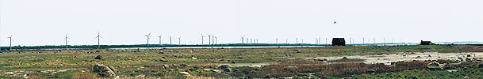

Wind
Turbines and the Environment: Landscape

Hints About Landscape Architecture and Wind Turbines

Simple
Geometrical Patterns
In flat areas it is often a good idea to place turbines in a
simple geometrical pattern which is easily perceived by the viewer.
Turbines placed equidistantly in a straight line work well, but
the example in the picture above may be even more elegant, where
landscape contours invite such a solution.
 There are limits to the usefulness of being
dogmatic about using simple geometrical patterns, however:
There are limits to the usefulness of being
dogmatic about using simple geometrical patterns, however:
 In hilly landscapes it is rarely feasible
to use a simple pattern, and it usually works better to the the
turbines follow the altitude contours of the landscape, or the
fencing or other characteristic features of the landscape.
In hilly landscapes it is rarely feasible
to use a simple pattern, and it usually works better to the the
turbines follow the altitude contours of the landscape, or the
fencing or other characteristic features of the landscape.
 Whenever turbines are placed in several rows,
one will rarely be able to perceive the pattern when the park
is viewed from normal eye level. Only when one is standing at
the end of a row, does it really appear as an ordered layout.
In the next panorama picture, you will probably only be able
to discern three rows of turbines, while the rest appear to be
scattered around the landscape.
Whenever turbines are placed in several rows,
one will rarely be able to perceive the pattern when the park
is viewed from normal eye level. Only when one is standing at
the end of a row, does it really appear as an ordered layout.
In the next panorama picture, you will probably only be able
to discern three rows of turbines, while the rest appear to be
scattered around the landscape.

by Suzanne Clemmesen
Light
Grey Paint
The picture above shows one of the larger groupings of Danish
built wind turbines at Näsudden on the island of Gotland
in Sweden. The grey paint on the turbines make them blend well
into the landscape.
Size
of Wind Turbines
Large wind turbines enable the same amount of energy to be produced
with fewer wind turbines. There may be economic advantages to
this, such as lower maintenance costs.
 From an aesthetic point of view, large wind
turbines may be an advantage in the landscape, because they generally
have lower rotational speed than smaller turbines. Large turbines
therefore do not attract the eye the way fast-moving objects
generally do.
From an aesthetic point of view, large wind
turbines may be an advantage in the landscape, because they generally
have lower rotational speed than smaller turbines. Large turbines
therefore do not attract the eye the way fast-moving objects
generally do.
People's
Perception of Wind Turbines in the Landscape
To a large extent it is a matter of taste how people perceive
that wind turbines fit into the landscape.
 Numerous studies in Denmark, the UK, Germany,
and the Netherlands have revealed that people who live near wind
turbines are generally more favourable towards them than city
dwellers. You may find more details about these studies in the
article Public Attitudes
Toward Wind Power on this web site.
Numerous studies in Denmark, the UK, Germany,
and the Netherlands have revealed that people who live near wind
turbines are generally more favourable towards them than city
dwellers. You may find more details about these studies in the
article Public Attitudes
Toward Wind Power on this web site.
 A beautiful book of photographic examples
of Wind Turbines in the Landscape may be purchased from Birk
Nielsens Tegnestue, Aarhus, Denmark. The price is approximately
150 DKK, plus postage.
A beautiful book of photographic examples
of Wind Turbines in the Landscape may be purchased from Birk
Nielsens Tegnestue, Aarhus, Denmark. The price is approximately
150 DKK, plus postage.
© Copyright 2000 Soren Krohn. All rights reserved.
Updated 26 September 2000
http://www.windpower.org/tour/env/index.htm